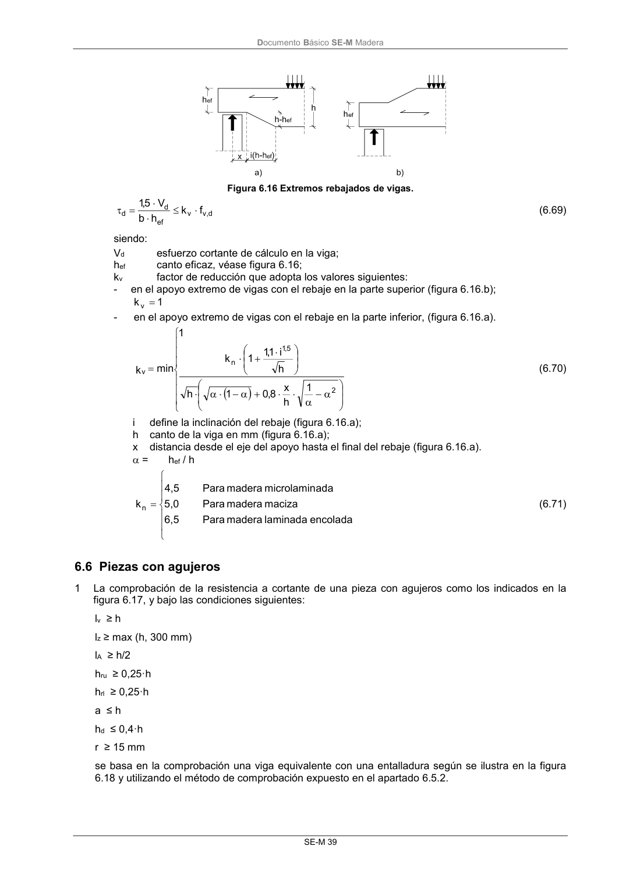

DB-SE-M Madera · edición 2019-12-20 · capa oficial
Documento DB-SE-M-oficial · SHA-256 del PDF 26b5819839ebfda78b0b119c5e76a0a37773b0d763c05688541870075df93718
Página física 45 de 132.
Copia fiel del PDF fuente · Fuente oficial
Ficha de la disposición en la fuente oficial
Formato: Texto de la página (Markdown)
Documento Básico SE-M Madera SE-M 39 Figura 6.16 Extremos rebajados de vigas. d , v v ef d d f k h b V 5,1 (6.69) siendo: Vd esfuerzo cortante de cálculo en la viga; hef canto eficaz, véase figura 6.16; kv factor de reducción que adopta los valores siguientes: - en el apoyo extremo de vigas con el rebaje en la parte superior (figura 6.16.b); 1 k v - en el apoyo extremo de vigas con el rebaje en la parte inferior, (figura 6.16.a). 2 5 ,1 n v 1 h x 8,0 1 h h i 1,1 1 k 1 min k (6.70) i define la inclinación del rebaje (figura 6.16.a); h canto de la viga en mm (figura 6.16.a); x distancia desde el eje del apoyo hasta el final del rebaje (figura 6.16.a). = hef / h encolada laminada madera Para 6,5 maciza madera Para 5,0 ada microlamin madera Para 4,5 kn (6.71) 6.6 Piezas con agujeros 1 La comprobación de la resistencia a cortante de una pieza con agujeros como los indicados en la figura 6.17, y bajo las condiciones siguientes: lv ≥ h lz ≥ max (h, 300 mm) lA ≥ h/2 hru ≥ 0,25·h hrl ≥ 0,25·h a ≤ h hd ≤ 0,4·h r ≥ 15 mm se basa en la comprobación una viga equivalente con una entalladura según se ilustra en la figura 6.18 y utilizando el método de comprobación expuesto en el apartado 6.5.2.
